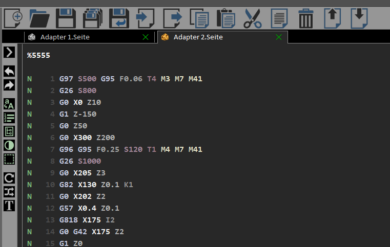
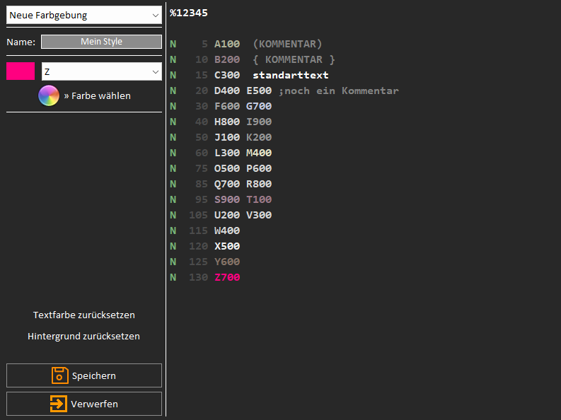
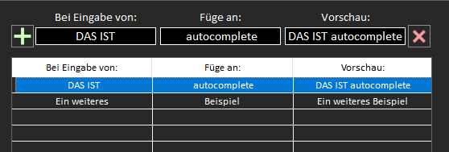
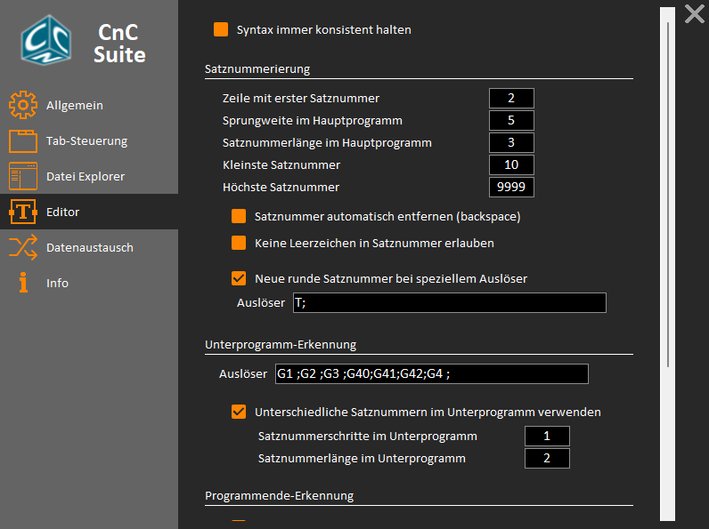

The behavior of the editor can be modified using the vertical toolbar.
Features (from up to down):
Beside that, the editor could be adapted via app settings.
With the color-manager the color styling of the editor is customizable.
Using the dropdoen-box the desired element can be selected and a color could be assigned with the 'Choose color' button. In the name-edit view the name of the new design is selectable.
User defined color profiles are static an do not adapt automatically if a global design change is executed.
With the autocomplete setup, new autocomplete data can be added.
A new sentence can be added using the plus button. The trigger is specified in the first column. If autocomplete is enabled, the content of the second column is appended when the trigger is entered. The entries can be adjusted by selecting a line in the list. The selected line is deleted by pressing the delete button.
With the autosyntax settings the automatic formatting, the linenumber rules and the behavior is adaptable.
